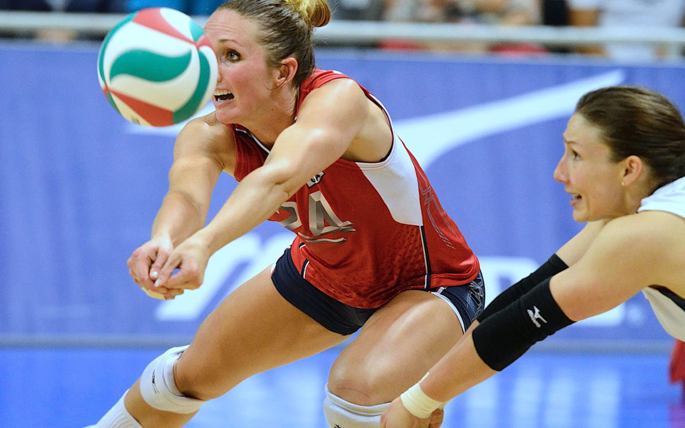

Volleyball has four main skills. These are serving, passing, setting, and spiking.
https://volleycountry.com/news/key-skills-for-volleyball
Underhand Serve
An underhand serve is a volleyball serve in which the ball is given a
slight under-hand toss from about waist high and then struck with a
closed fist by the opposite hand.
The underhand serve is usually the first type of serve taught to a
beginning player in youth volleyball.
Overhand Serve
The overhand serve is done by tossing the ball up into the air then
striking it with the opposite hand above the shoulder.
Forearm passing (passing) is performed by bringing the forearms
together to work as a platform for passing the ball. Historically, the
forearm platform has been the most commonly used surface for
controlling the first ball sent over the net by a serve or an attack.
When you hand set, you want to train your hands to contact the ball
the same way every time. When first learning setting position, to
start, make a triangle with your fingers. Your goal should be to
position your hands so that the volleyball would hit you right
between the eyes if you were to let the ball go through your hands.
A volleyball spike or attack is the strategy used to send the ball
over the net to the opponent in such a manner that ball is not
returnable. The spike is performed by moving the arm in a way
such that you angle the ball to land on the ground of your
opponent's side of the court. Usually a spike is hit with great force
at a downward angle.